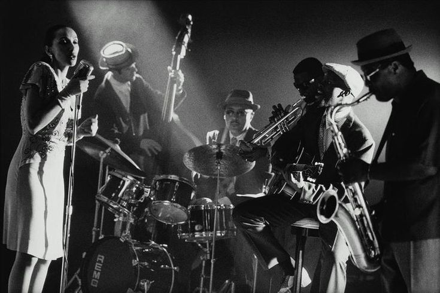

The Musicians who Started it all...
Starting off strong with no one other than Chet Baker-known as the 'prince of cool'. He played his role in the development of cool jazz. He was a skillfull trumpet player, and a brilliant singer-even my mom likes his music. Then of course there is Charlie Parker who you may know from 'In The Still OF The night' one of his more famous songs. Another saxophone player Woody Herman, has some lovely songs. The list goes on with Sam Cooke who has some great romantic songs. Oscar Peterson, and his classy piano tunes perfect for an evening out. Then, there's Lesley Gore and Julie London two iconic women of the classy jazz era! So many wondeful musicians who have inspired old and new talented ones to come.